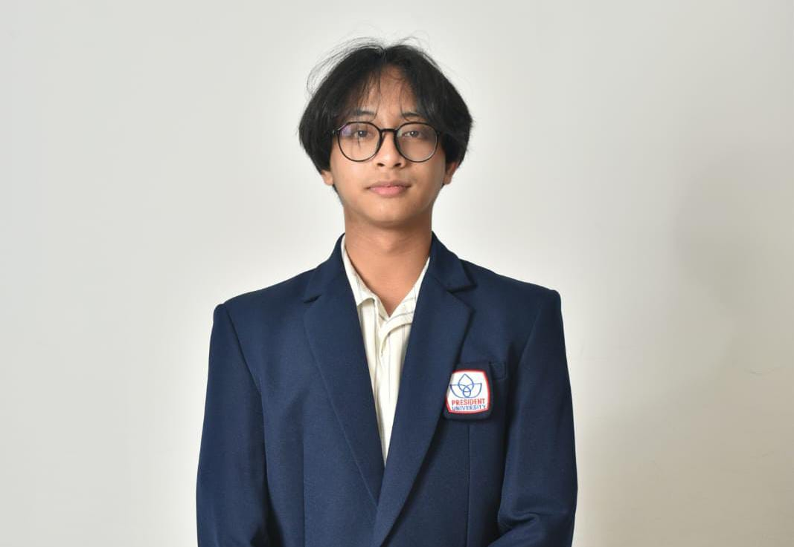

Fokus pada pengembangan aplikasi web performa tinggi, sistem berbasis sensor/embedded, arsitektur microservice, dan implementasi algoritma terstruktur.

Eksplorasi berbagai proyek web fullstack, microservice dashboard, hingga embedded signal processing.
Aplikasi web penjelajah dan pelacak keuangan fullstack dengan sistem autentikasi aman serta penyajian wawasan finansial secara real-time.
Platform pemesanan kafe interaktif yang dilengkapi dengan identitas visual empat warna kustom untuk meningkatkan pengalaman pengguna (UX).
Dashboard resiliensi microservice dan chaos engineering yang mengimplementasikan Redis-backed circuit breaker untuk toleransi kesalahan sistem (fault tolerance).
Sistem berbasis WiFi CSI (Channel State Information) untuk deteksi keberadaan manusia dan estimasi pose menggunakan pemrosesan sinyal terintegrasi pada mikrokontroler ESP32-S3.
Memegang peran kepemimpinan operasional dan acara dalam organisasi mahasiswa Ilmu Komputer.
Aktif dalam struktur organisasi sekolah serta mengikuti pelatihan manajemen dan kepemimpinan tingkat internasional.
Saya adalah seorang pengembang perangkat lunak dengan fokus pada pengembangan sistem fullstack, arsitektur microservices, serta embedded signal processing. Memiliki pengalaman kepemimpinan dalam organisasi dan latar belakang kompetisi debat nasional.
Punya ide proyek menarik atau ingin berdiskusi seputar peluang kerja sama? Jangan ragu untuk menghubungi saya.